.png)
.png)

Цель
Проинформировать общество о реальном влиянии творчества на развитие детей, оставшихся без попечения родителей, и привлечь поддержку их творческих начинаний.
Истории детей, которые важно услышать
Руководитель проекта - Бадалова Камила
Смотреть истории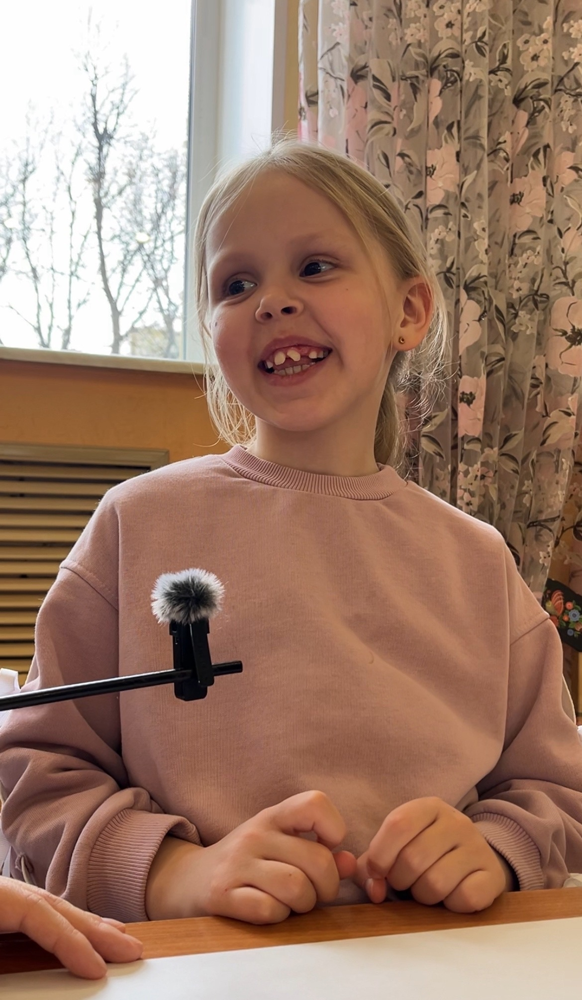
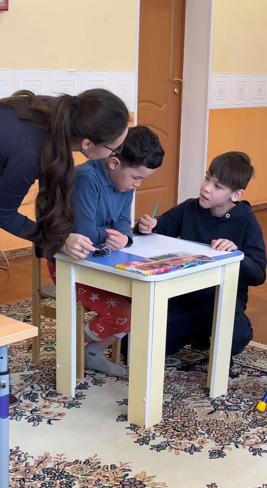
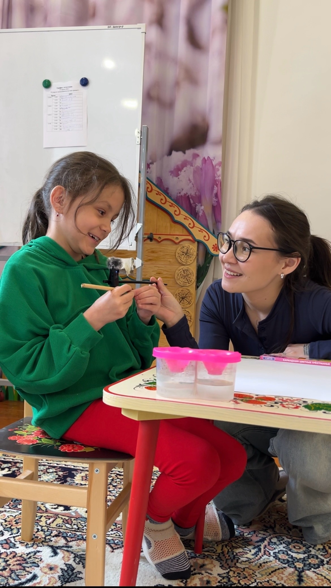
«Нас не видно, но мы есть» - социально-художественный проект в формате интерактивной выставки, созданный как студенческая инициатива. На выставке представлены рисунки детей, оставшихся без попечения родителей, в том числе детей с ограниченными возможностями здоровья, из центра социальной и коррекционной помощи «Радуга». За каждым QR-кодом - короткий аудиорассказ автора о его мечте или тёплом воспоминании.
Главная идея - через творчество показать внутренний мир детей и создать личный диалог между ребёнком и обществом. Проект направлен на информирование о том, как творчество влияет на развитие детей, и привлечение поддержки их творческих начинаний.
Проинформировать общество о реальном влиянии творчества на развитие детей, оставшихся без попечения родителей, и привлечь поддержку их творческих начинаний.
Показать, как искусство помогает детям выражать эмоции, развивать уверенность и навыки социализации. Создать пространство честного диалога через рисунки и аудиорассказы, а также обеспечить воспитанников центра «Радуга» художественными наборами для регулярных занятий.
Выставка объединяет зрителей, партнёров и благотворительный фонд «С любовью» вокруг темы осознанной поддержки. Искусство становится мостом, который помогает преодолеть стереотипы и увидеть в ребёнке глубокую, развивающуюся личность, а не просто подопечного учреждения.
Это диалог. Без посредников.
Согласование участия детей из центра социальной и коррекционной помощи «Радуга». Подготовка материалов для творчества и организация мест для записи аудиорассказов.
Дети рисуют то, что для них важно (мечты, теплые воспоминания), и записывают короткие истории о своих работах. Если ребёнок стесняется говорить, его история сохраняется в текстовом виде.
Печать работ, создание интерактивных QR-кодов и монтаж экспозиции. Организация сбора благотворительных средств через партнерский фонд на закупку художественных наборов для центра.
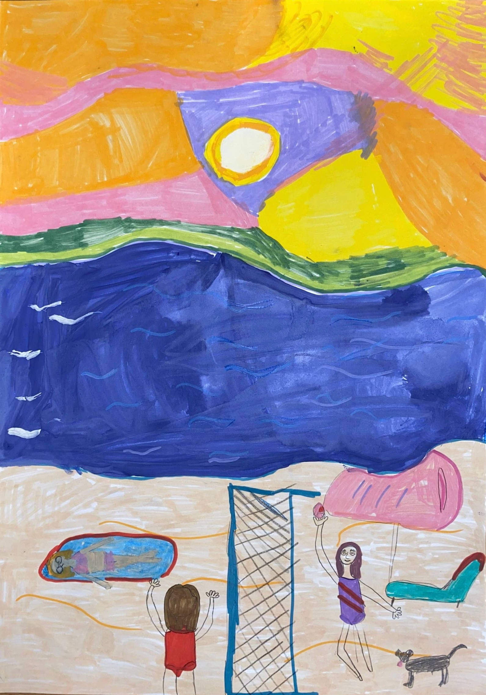
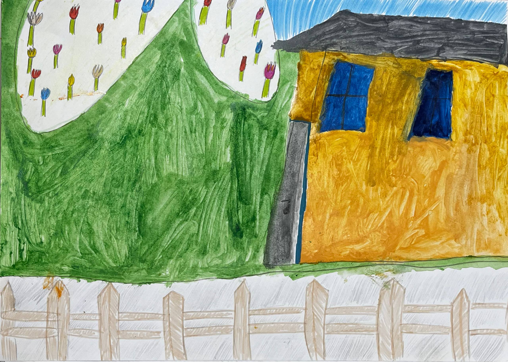

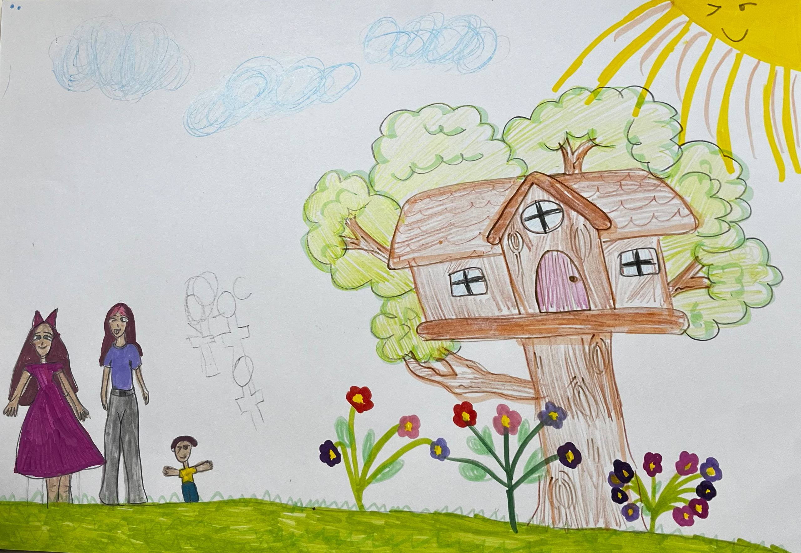

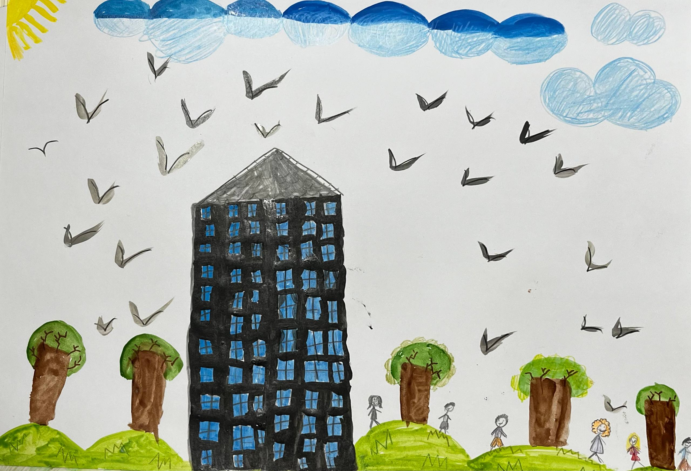
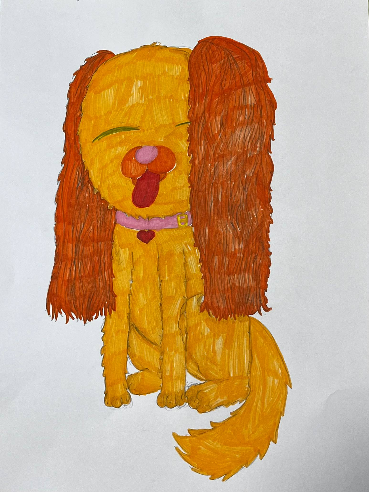
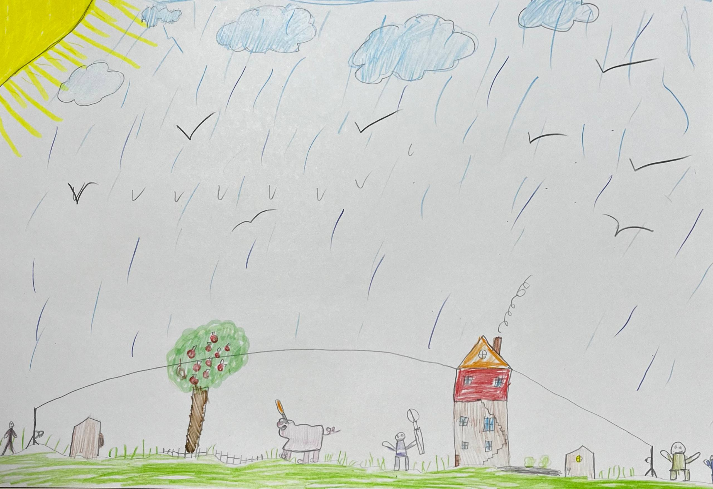
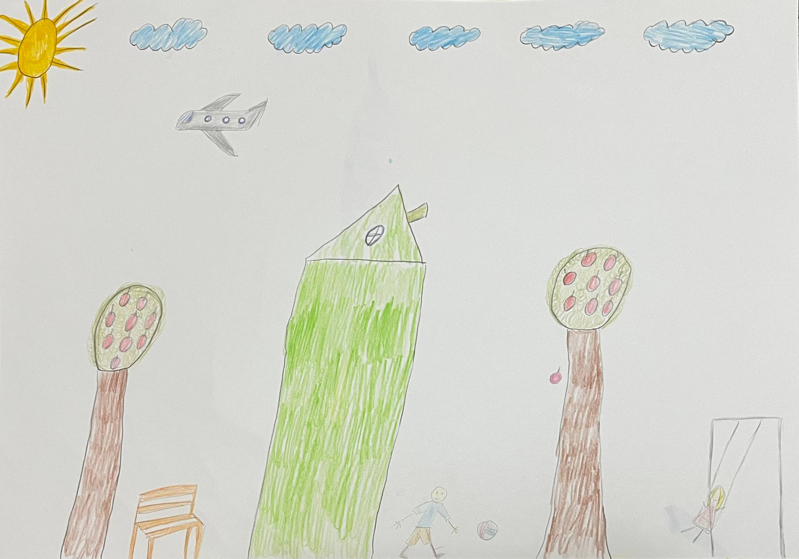
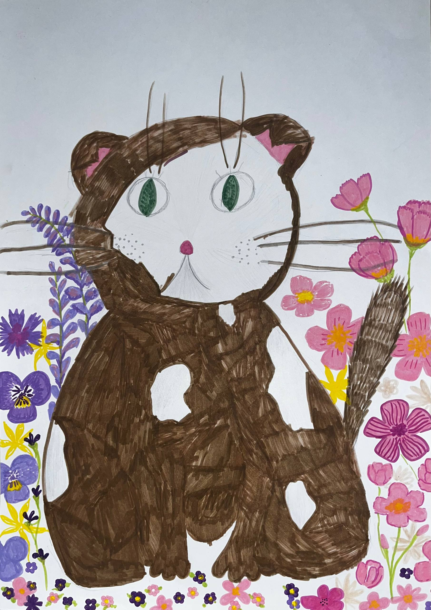

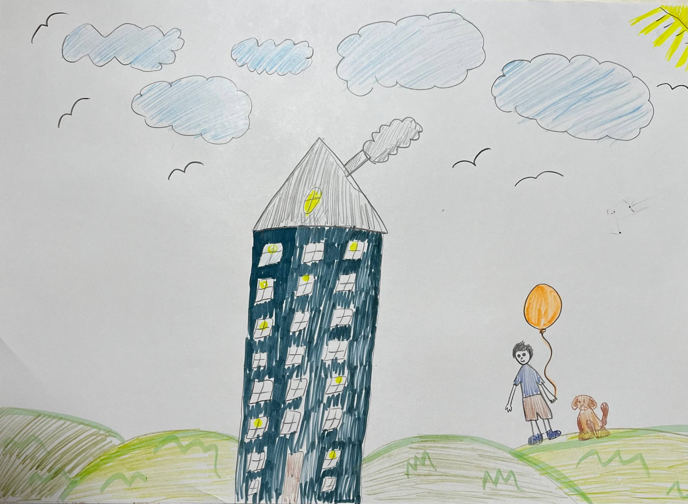
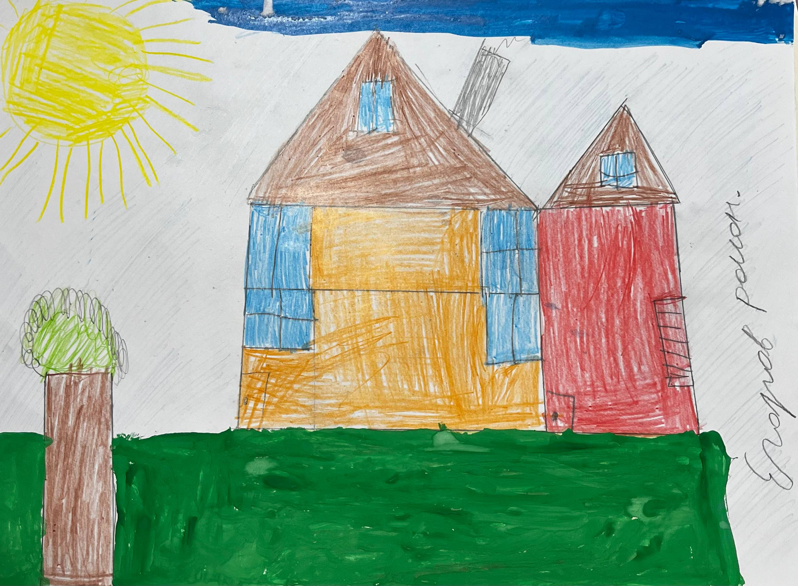
Обеспечивает юридическую прозрачность сбора и целевое направление средств на закупку художественных наборов. Гарантирует публичную отчётность и координацию действий с центром «Радуга».
Центр социальной и коррекционной помощи детям, оставшимся без попечения родителей. Создаёт безопасную среду для творческого развития, организует участие детей в проекте и обеспечивает получение всех необходимых разрешений от органов опеки.
Предоставляют пространство для интерактивной экспозиции. Помогают транслировать идеи проекта широкой аудитории, создавая условия для живого диалога между детским творчеством и обществом.
Все пожертвования направляются на нужды детей-участников: материалы для творчества, культурные выезды, подарки и другие согласованные инициативы. Расходование средств ведётся совместно с партнёрским фондом и сопровождается публичной отчётностью.
Поддержать